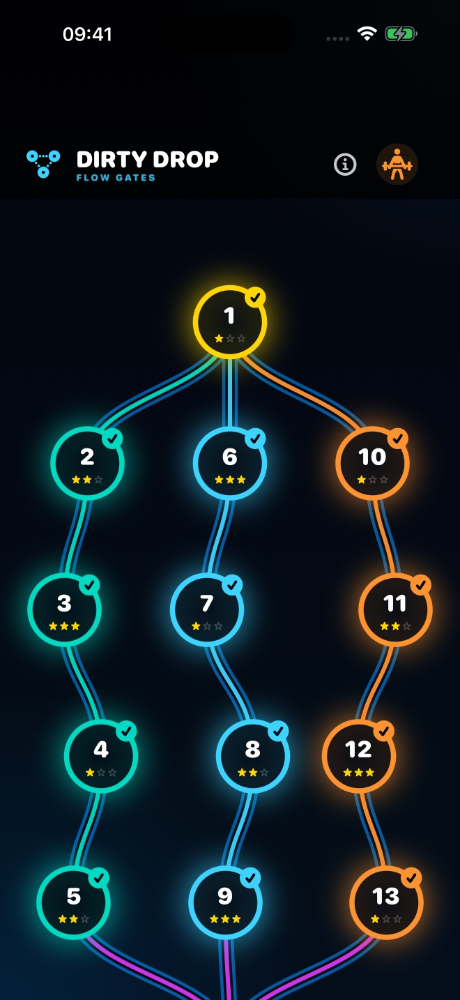
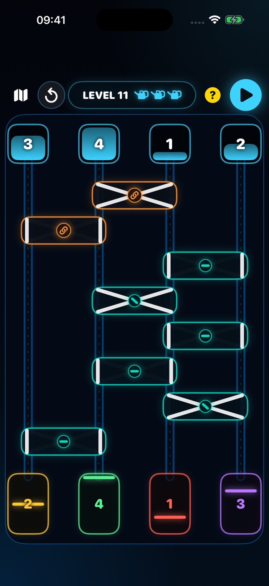
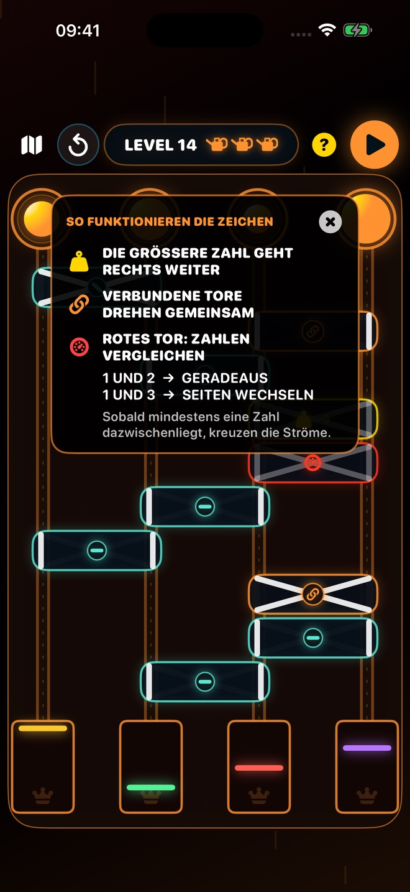
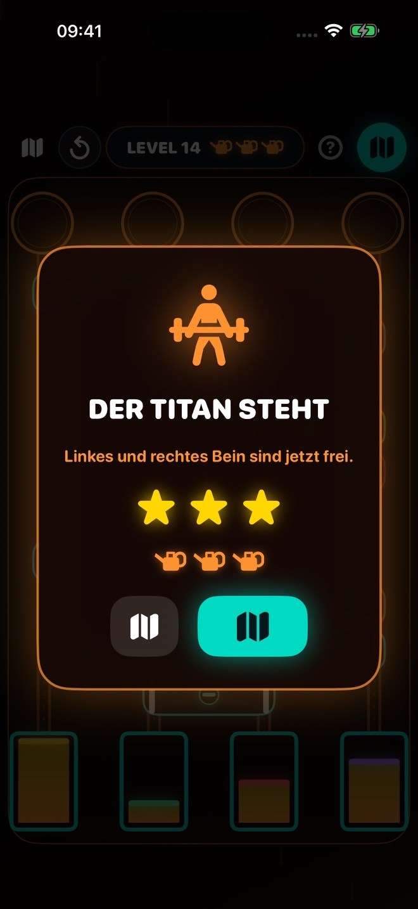

Dirty Drop Support
So funktioniert ein Level
- Vergleiche die vier Wassermengen oben mit den vier Zielmarkierungen unten.
- Verfolge die Leitungen und überlege, welche Menge an welchem Ziel ankommen muss.
- Tippe auf verstellbare Weichen, um sie gerade oder gekreuzt zu stellen.
- Starte den Wasserlauf mit der Play-Taste.
Das Level ist geschafft, wenn alle vier Zielbehälter exakt stimmen. Jeder falsche Durchlauf leert eine Gießkanne. Bereits geschaffte Level und Sterne bleiben nach einem Game Over erhalten.




Technische Hilfe
Bei einem Problem bitte iPhone-Modell, iOS-Version, Levelnummer und eine kurze Beschreibung mitsenden.
Kontakt: rasivop@gmail.com
© 2026 Roland Konrad